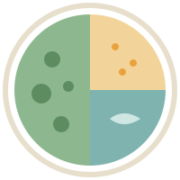

Könnyű Konyha
Könnyű Konyha

ma erre gondoltunk
Napi ajánló
Hétfő
becsült napi zsír: 28 g 5 étkezés

Kedd
becsült napi zsír: 23 g 5 étkezés


Szerda
becsült napi zsír: 34 g 5 étkezés · húsmentes nap és olajos hal napja
Csütörtök
becsült napi zsír: 24,5 g 5 étkezés
Péntek
becsült napi zsír: 27 g 5 étkezésSzombat
becsült napi zsír: 24 g 5 étkezésVasárnap
becsült napi zsír: 27,5 g 5 étkezésA napi zsír a receptek becsült értékeinek összege. Nem előírás: a sorrend cserélhető. A teljes hét · Bevásárlólista a hétre
grammokkal, adagra számolt zsírral
Receptek, amik tényleg ízlenek
 Ebéd
EbédSült tőkehal citrommal, burgonyapürével
35 perc 7 g
 Vacsora
VacsoraSütőben sült lazac párolt brokkolival
25 perc 16 g
 Reggeli
ReggeliZabkása almával, fahéjjal
10 perc 6 g
 Ebéd
EbédZöldséges csirkemell-ragu párolt rizzsel
35 perc 11 g
 Ebéd
EbédVörös lencse főzelék, joghurtos habarással
30 perc 6 g
 Tízórai
TízóraiJoghurtos bogyós pohár
5 perc 3 g
 Vacsora
VacsoraTonhalas-babos saláta
10 perc 6,5 g
 Mind a 15 receptgrammokkal, zsírszámmal
Mind a 15 receptgrammokkal, zsírszámmal
így néz ki egy jó tányér
Fele zöldség, negyede gabona, negyede fehérje
- zöldség, gyümölcs: napi 500 g[3]
- teljes kiőrlésű gabona, burgonya, hüvelyes
- hal, csirke, pulyka, túró, tojás
egyszerű csere, nagy különbség
Ehelyett ezt
| Ehelyett | Ezt | Nyereség (becslés) |
|---|---|---|
| rántott hús | sütőben sült vagy grillserpenyős filé | kb. 15–25 g zsír |
| tejszínes mártás | paradicsomos vagy joghurtos öntet | kb. 25–30 g zsír |
| tejfölös habarás | joghurtos habarás | kb. 5,5 g zsír |
| chips, sós mogyoró | rizskeksz, nyers zöldség | kb. 15–30 g zsír |
A számok becslések; a konkrét termék csomagolása felülírja őket. A teljes cseretábla

Egy teáskanál olaj: kb. 4,6 g zsír
Egy „kis” löttyintés a serpenyőbe könnyen három evőkanál, vagyis kb. 40 g zsír. Mérőkanállal vagy olajsprayvel a többi szám is értelmes lesz.[4]